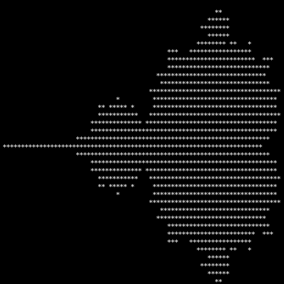
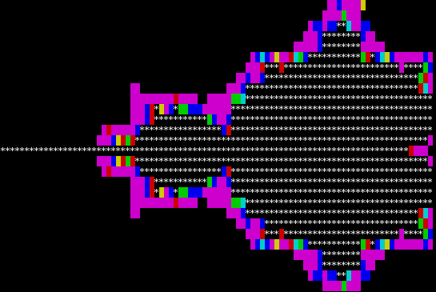

Nachdem ich LuFi in meinen Docker-Zoo integriert hatte, habe ich mich noch ein wenig auf der Gitlab-Instanz umgesehen, auf der das zugehörige Repository gehostet ist und fand ein weiteres interessantes Projekt, das mich wieder einmal in einen Kaninchenbau gestürzt hat...
Ich habe mich bereits einige Zeit nicht mehr mit dem Thema Chaos und nichtlineare Systeme beschäftigt und so freute ich mich über die Inspiration hier.
In diesem Projekt wird eine andere Art von HelloWorld Programm propagiert: die Darstellung der Mandelbrot-Menge auf der Kommandozeile im Terminal. Das interessierte mich und so habe ich ein Issue eingestellt, da in dem Projekt eine Java-Variante noch fehlte.
Das Ergebnis dieses Programms sieht man hier:

Mandelbrot-Menge im TerminalDanach "spaltete mich die Inspiration von Kopf bis fuß" - um mal Mark Twain zu zitieren: Ich überlegte, dass die Darstellung des Mandelbrot-Fraktals, wie sie heute meistens für Bildschirmschoner und ähnliches benutzt wird nicht nur anzeigt, ob ein bestimmter Punkt zur Menge gehört oder nicht, sondern die Anzahl der Iterationen visualisiert, ab der ein Punkt die Menge verlässt. Und da es ja möglich ist, Farben im Terminal darzustellen, versuchte ich mich an einer Weiterentwicklung dieses Codes, der folgendes Ergebnis erbrachte:

Mandelbrot-Menge im Terminal
public class CliMandelbrot
{
private static final java.awt.geom.Point2D ORIGIN=new java.awt.geom.Point2D.Double(0,0);
public static final String ANSI_RESET = "\u001B[0m";
public static final String ANSI_BLACK_BACKGROUND = "\u001B[40m";
public static final String ANSI_RED_BACKGROUND = "\u001B[41m";
public static final String ANSI_GREEN_BACKGROUND = "\u001B[42m";
public static final String ANSI_YELLOW_BACKGROUND = "\u001B[43m";
public static final String ANSI_BLUE_BACKGROUND = "\u001B[44m";
public static final String ANSI_PURPLE_BACKGROUND = "\u001B[45m";
public static final String ANSI_CYAN_BACKGROUND = "\u001B[46m";
public static final String ANSI_WHITE_BACKGROUND = "\u001B[47m";
private static java.lang.String[] colors=new java.lang.String[]{
ANSI_BLACK_BACKGROUND,
ANSI_PURPLE_BACKGROUND,
ANSI_BLUE_BACKGROUND,
ANSI_RED_BACKGROUND,
ANSI_GREEN_BACKGROUND,
ANSI_CYAN_BACKGROUND,
ANSI_YELLOW_BACKGROUND,
ANSI_WHITE_BACKGROUND,
};
private static int mandelbrot(double re, double im, int iterations)
{
double zre = 0;
double zim = 0;
int i=0;
for (; i < iterations; ++i)
{
double sqre=zre*zre-zim*zim;
double sqim=zre*zim*2;
zre=sqre+re;
zim=sqim+im;
double A=ORIGIN.distance(zre,zim);
if(A>2)
break;
}
return i;
}
public static void main(java.lang.String[] args)
{
int iterations=50;
double r = 0.25;
double theta=0.3;
double ymid=r*java.lang.Math.cos(theta)-1;//-java.lang.Math.E/7.0;//-0.75;//0;
double xmid=r*java.lang.Math.sin(theta);//-java.lang.Math.E/20.0;//0.1;//-0.8;
if(args.length>0)
{
try{
iterations=java.lang.Integer.parseInt(args[0]);
}catch(java.lang.Throwable t){}
}
int div=iterations/colors.length+1;
int rows=28;
int cols=90;
double zoomfactor=100;
double yspan=2/zoomfactor;
double ystart=ymid+yspan*0.5;
double ystep=yspan/(double)rows;
double xspan=2.4/zoomfactor;
double xstart=xmid-xspan*0.5;
double xstep=xspan/(double)cols;
for (int y=0;y<rows;++y) {
for (int x=0;x<cols;++x) {
int i = mandelbrot(xstart+(double)x*xstep,ystart-(double)y*ystep,iterations);
if (i==iterations) {System.out.print("*");}
else {System.out.print(colors[i/div]+" "+ANSI_RESET);}
}
System.out.println();
}
System.out.println(ystart+" "+(ystart-(double)rows*ystep));
}
}
Es soll hier natürlich nicht unerwähnt bleiben, dass ich nicht der erste bin, der auf solche Ideen gekommen ist: Das gute alte Rosetta Code Projekt hält ebenso Implementierungen dafür bereit - sogar vollständig als Bash-Skript-Implementierung wie es auch an anderen Stellen im Internet ähnliche Experimente zu finden gibt:
 Mandelbrot-Menge mittels Bash berechnet (Quelle)
Mandelbrot-Menge mittels Bash berechnet (Quelle)
Artikel, die hierher verlinken
Generative Art: Mastodon-BitBot
04.12.2021
Ich stieß auf meinen Streifzügen durch meine Bubble neulich wieder auf einen interessanten Bot und einen sehr interessanten Eintrag, den dieser gerade generiert hatte:


Vor 5 Jahren hier im Blog
-
Band from TV
09.12.2016
Nachdem ich ihn in Blackadder gesehen hatte wusste ich, dass er ein guter Schauspieler ist - danach konnte ich aber wann immer ich ihn sah ein Lächeln nicht mehr unterdrücken. Das er auch Musik macht, erfuhr ich erst vor ungefähr einem Jahr.
Weiterlesen...
Tags
Android Basteln C und C++ Chaos Datenbanken Docker dWb+ ESP Wifi Garten Geo Git(lab|hub) Go GUI Hardware Java Jupyter Komponenten Links Linux Markup Music Numerik PKI-X.509-CA Python QBrowser Rants Raspi Revisited Security Software-Test sQLshell TeleGrafana Verschiedenes Video Videos Virtualisierung Windows Upcoming...
Neueste Artikel
-
Trojan SQL
Ich habe bereits über Ideen geschrieben, die TrojanSource-Vulnerability in anderen Kontexten zu untersuchen - ein Vorkommnis in dem Job, mit dem ich mir das Geld für Kuchen verdiene hat mich jetzt angestachelt, diese Untersuchung tatsächlich umfangreich und gründlich durchzuführen. Dieser Beitrag wurde zum CCC End-of-year event 2021 eingereicht und abgelehnt.
Weiterlesen... -
Deutsches Tastaturlayout für DigiSparkCustomKeyboard
Nachdem ich neulich über die Hardware und die Motivation dahinter berichtete wollte ich den Prototypen für ernsthafte Aufgaben umrüsten. Das erwies sich nicht als so einfach, wie ich gehofft hatte...
Weiterlesen... -
Generative Art: Mastodon-BitBot
Ich stieß auf meinen Streifzügen durch meine Bubble neulich wieder auf einen interessanten Bot und einen sehr interessanten Eintrag, den dieser gerade generiert hatte:
Weiterlesen...
Manche nennen es Blog, manche Web-Seite - ich schreibe hier hin und wieder über meine Erlebnisse, Rückschläge und Erleuchtungen bei meinen Hobbies.
Wer daran teilhaben und eventuell sogar davon profitieren möchte, muß damit leben, daß ich hin und wieder kleine Ausflüge in Bereiche mache, die nichts mit IT, Administration oder Softwareentwicklung zu tun haben.
Ich wünsche allen Lesern viel Spaß und hin und wieder einen kleinen AHA!-Effekt...
PS: Meine öffentlichen GitHub-Repositories findet man hier.